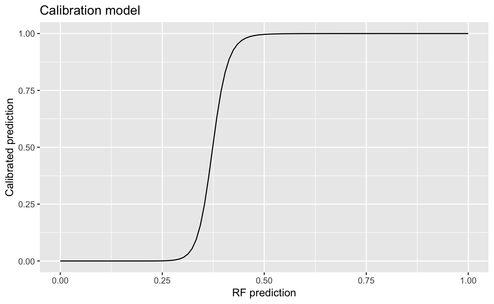
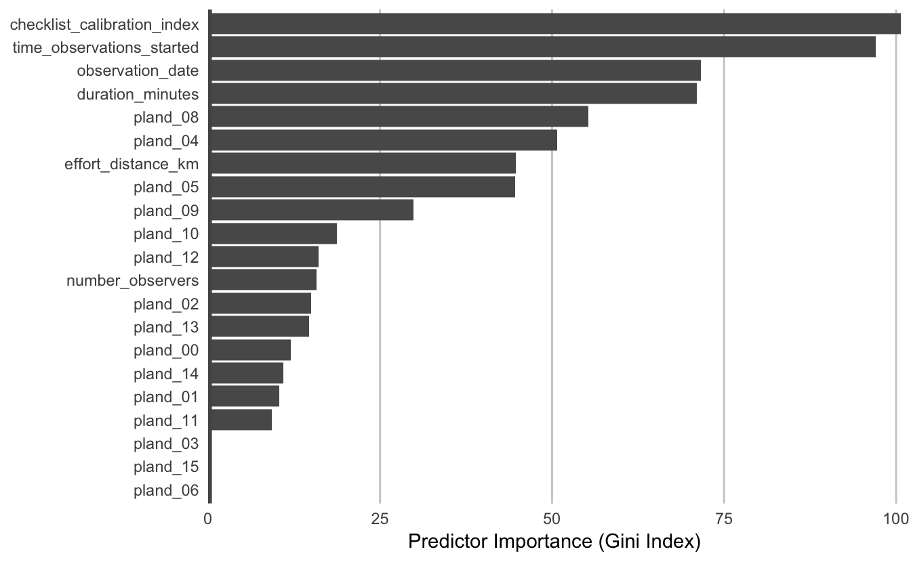
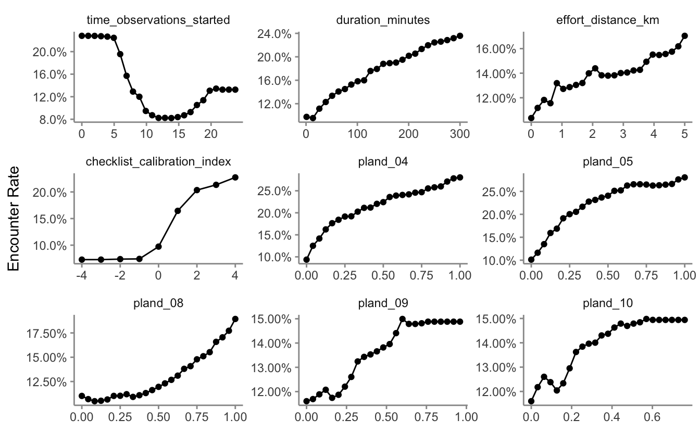
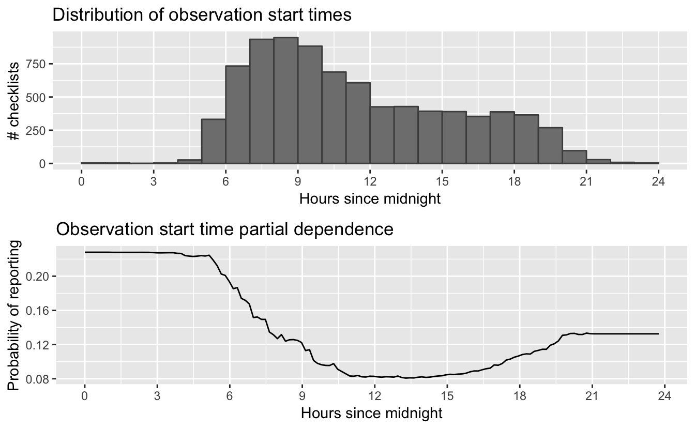

Chapter 4 Modeling Encounter Rate
4.1 Introduction
In this chapter we’ll estimate the encounter rate of Wood Thrush on eBird checklists in June in BCR 27. We define encounter rate as measuring the probability of an expert eBirder encountering a species on a standard eBird checklist, so that the calculated encounter rates approximate the actual occurrence rates of Wood Thrush. The ecological metric we’re ultimately interested in is the probability that a species occurs at a site (i.e. the occupancy probability). This is usually not possible with semi-structured citizen science data like those from eBird because we typically can’t estimate absolute detectability. However, by accounting for much of the variation in detectability by including effort covariaters in our model, the remaining unaccounted detectability will be more consistent across sites (Guillera-Arroita et al. 2015). Therefore, the encounter rate metric will be relative to occupancy up to a constant of detectability, allowing us to compare species distributions across space and time.
Random forests are a general purpose machine learning method applicable to a wide range of classification and regression problems, including the task at hand: identifying predictors that classify reporting and non-reporting of a species on eBird checklists. In addition to good predictive performance, random forests are reasonably easy to use and have several efficient implementations in R. Prior to fitting a random forest model, we’ll demonstrate how to address issues of class imbalance and spatial bias using spatial subsampling on a regular grid. After fitting the model, we’ll assess its performance using a subset of data put aside for testing, and calibrate the model to ensure predictions are accurate. Finally, we’ll predict encounter rates throughout the study area and produce maps of these predictions.
4.2 Data preparation
Let’s get started by loading the necessary packages and data. If you worked through the previous chapters, you should have all the data necessary for this chapter. However, you may want to download the data package, and unzip it to your working directory, to ensure you’re working with exactly the same data as was used in the creation of this book. Note that the Checklist Calibration Index (CCI), which calibrates observers and checklists against others from similar times and places, is an optional covariate in these models. Including CCI typical leads to marked improvement in model performance; however, due to the sensitive nature of these data you will need to download them separately after agreeing to the terms and conditions. If you’ve downloaded these data, put the CCI text file in the data/ subdirectory of your project.
library(sf)
library(raster)
library(dggridR)
library(lubridate)
library(ranger)
library(scam)
library(PresenceAbsence)
library(verification)
library(edarf)
library(viridis)
library(fields)
library(gridExtra)
library(tidyverse)
# resolve namespace conflicts
select <- dplyr::select
projection <- raster::projection
set.seed(1)
# ebird data
ebird <- read_csv("data/ebd_woothr_june_bcr27_zf.csv") %>%
# year required to join to habitat data
mutate(year = year(observation_date))
# modis habitat covariates
habitat <- read_csv("data/modis_pland_location-year.csv") %>%
mutate(year = as.integer(year))
# combine ebird and habitat data
ebird_habitat <- inner_join(ebird, habitat, by = c("locality_id", "year"))
# optional checklist calibration index
cci_file <- "data/cci_june_bcr27.csv"
if (file.exists(cci_file)) {
cci <- read_csv(cci_file)
ebird_habitat <- inner_join(ebird_habitat, cci, by = "checklist_id") %>%
filter(!is.na(checklist_calibration_index))
}
# prediction surface
pred_surface <- read_csv("data/modis_pland_prediction-surface.csv")
r <- raster("data/prediction-surface.tif")
# load gis data for making maps
map_proj <- st_crs(102003)
ne_land <- read_sf("data/gis-data.gpkg", "ne_land") %>%
st_transform(crs = map_proj) %>%
st_geometry()
bcr <- read_sf("data/gis-data.gpkg", "bcr") %>%
st_transform(crs = map_proj) %>%
st_geometry()
ne_country_lines <- read_sf("data/gis-data.gpkg", "ne_country_lines") %>%
st_transform(crs = map_proj) %>%
st_geometry()
ne_state_lines <- read_sf("data/gis-data.gpkg", "ne_state_lines") %>%
st_transform(crs = map_proj) %>%
st_geometry()4.3 Spatiotemporal subsampling
As discussed in the introduction, three of the challenges when using citizen science data, such as those from eBird, are spatial bias, temporal bias, and class imbalance. Spatial and temporal bias refers to the tendency of eBird checklists to be distributed non-randomly in space and time, while class imbalance refers to fact that there will be many more non-detections than detections for most species. All three can impact our ability to make reliable inferences from these data. Fortunately, all three can largely be addressed through subsampling the eBird data prior to modeling. In particular, we define an equal area hexagonal grid across the study region, then randomly sample one checklist from each grid cell for each week. To deal with class imbalance, we subsample detections and non-detections separately to ensure we don’t lose too many detections.
Hexagonal grids seem exotic relative to square grids, which may be more familiar, however, they have a variety of benefits (Sahr 2011) including significantly less spatial distortion. With hexagonal grids we can be sure all the cells are of equal area, which is particularly important if we have a large region for modeling. The R package dggridR makes working with hexagonal grids simple and efficient. We’ll construct a grid with 5 km spacing between the centres of adjacent hexagons, then sample randomly from these hexagonal cells.
Before working with the real data, it’s instructive to look at a small toy example, to see how this subsampling process works. We’ll generate a few hundred random points, overlay a hexagonal grid, then sample one point from each cell.
# bounding box to generate points from
bb <- st_bbox(c(xmin = -0.1, xmax = 0.1, ymin = -0.1, ymax = 0.1),
crs = 4326) %>%
st_as_sfc() %>%
st_sf()
# random points, 10% detections
pts <- st_sample(bb, 500) %>%
st_sf(as.data.frame(st_coordinates(.)), geometry = .) %>%
rename(lat = Y, lon = X)
# contruct a hexagonal grid with ~ 5 km between cells
dggs <- dgconstruct(spacing = 5)
# for each point, get the grid cell
pts$cell <- dgGEO_to_SEQNUM(dggs, pts$lon, pts$lat)$seqnum
# sample one checklist per grid cell per week
pts_ss <- pts %>%
group_by(cell) %>%
sample_n(size = 1) %>%
ungroup()
# generate polygons for the grid cells
hexagons <- dgcellstogrid(dggs, unique(pts$cell), frame = FALSE) %>%
st_as_sf()
ggplot() +
geom_sf(data = hexagons) +
geom_sf(data = pts, size = 0.5) +
geom_sf(data = pts_ss, col = "red") +
theme_bw()
Now let’s apply exactly the same approach to subsampling the real eBird checklists.
# generate hexagonal grid with ~ 5 km betweeen cells
dggs <- dgconstruct(spacing = 5)
# get hexagonal cell id and week number for each checklist
checklist_cell <- ebird_habitat %>%
mutate(cell = dgGEO_to_SEQNUM(dggs, longitude, latitude)$seqnum,
week = week(observation_date))
# sample one checklist per grid cell per week
# sample detection/non-detection independently
ebird_ss <- checklist_cell %>%
group_by(species_observed, week, cell) %>%
sample_n(size = 1) %>%
ungroup()How did this impact the prevalence of detections compared to non-detections?
# original data
nrow(ebird_habitat)
#> [1] 40477
count(ebird_habitat, species_observed) %>%
mutate(percent = n / sum(n))
#> # A tibble: 2 x 3
#> species_observed n percent
#> <lgl> <int> <dbl>
#> 1 FALSE 38539 0.952
#> 2 TRUE 1938 0.0479
# after sampling
nrow(ebird_ss)
#> [1] 10391
count(ebird_ss, species_observed) %>%
mutate(percent = n / sum(n))
#> # A tibble: 2 x 3
#> species_observed n percent
#> <lgl> <int> <dbl>
#> 1 FALSE 9201 0.885
#> 2 TRUE 1190 0.115So, the subsampling decreased the overall number of checklists by a factor of about four, but increased the prevalance of detections from 4.80% to 11.5%. This increase in detections will help the random forest model distinguish where birds are being observed; however, we will need to account for this change in prevalence by calibrating our model, which will be covered in Section 4.4.1. Let’s look at how the subsampling affects the spatial distribution of the observations.
# convert checklists to spatial features
all_pts <- ebird_habitat %>%
st_as_sf(coords = c("longitude","latitude"), crs = 4326) %>%
st_transform(crs = map_proj) %>%
select(species_observed)
ss_pts <- ebird_ss %>%
st_as_sf(coords = c("longitude","latitude"), crs = 4326) %>%
st_transform(crs = map_proj) %>%
select(species_observed)
both_pts <- list(before_ss = all_pts, after_ss = ss_pts)
# map
par(mfrow = c(2, 1))
for (i in seq_along(both_pts)) {
par(mar = c(0.25, 0.25, 0.25, 0.25))
# set up plot area
plot(st_geometry(both_pts[[i]]), col = NA)
# contextual gis data
plot(ne_land, col = "#dddddd", border = "#888888", lwd = 0.5, add = TRUE)
plot(bcr, col = "#cccccc", border = NA, add = TRUE)
plot(ne_state_lines, col = "#ffffff", lwd = 0.75, add = TRUE)
plot(ne_country_lines, col = "#ffffff", lwd = 1.5, add = TRUE)
# ebird observations
# not observed
plot(st_geometry(both_pts[[i]]),
pch = 19, cex = 0.1, col = alpha("#555555", 0.25),
add = TRUE)
# observed
plot(filter(both_pts[[i]], species_observed) %>% st_geometry(),
pch = 19, cex = 0.3, col = alpha("#4daf4a", 0.5),
add = TRUE)
# legend
legend("bottomright", bty = "n",
col = c("#555555", "#4daf4a"),
legend = c("Non-detection", "Detection"),
pch = 19)
box()
par(new = TRUE, mar = c(0, 0, 3, 0))
if (names(both_pts)[i] == "before_ss") {
title("Wood Thrush eBird Observations\nBefore subsampling")
} else {
title("After subsampling")
}
}
For Wood Thrush, subsampling the detections and non-detections independently is sufficient for dealing with class imbalance; however, for species that are extremely rare, it may be worthwhile retaining all detections or even oversampling detections.
4.4 Random forests
Now we’ll use a random forest model to relate detection/non-detection of Wood Thrush to the MODIS habitat covariates, while also accounting for variation in detectability by including a suite of effort covariates. Before we fit the random forest model, we randomly split the data into 80% of checklists for training and 20% for testing. We’ll hold this 20% aside when we fit the model, then use it as an independent data set to test the predictive performance of the model.
ebird_split <- ebird_ss %>%
# random forests requires an integer repsonse
mutate(species_observed = as.integer(species_observed)) %>%
# select only the columns to be used in the model
select(species_observed,
observation_date,
time_observations_started, duration_minutes,
effort_distance_km, number_observers,
contains("checklist_calibration_index"),
starts_with("pland_")) %>%
drop_na()
# split 80/20
ebird_split <- ebird_split %>%
split(if_else(runif(nrow(.)) <= 0.8, "train", "test"))
map_int(ebird_split, nrow)
#> test train
#> 2075 8316There are several packages for fitting random forests in R; however, we’ll use ranger, which is a blazingly fast implementation with all the features we need. We fit a model with 1,000 classification trees (num.trees). For the number of variables randomly sampled at each split (mtry), we used the square root of the number of covariates (21). This choice of parameters will be suitable for a broad range of species distribution modeling tasks.
# grow random forest
rf <- ranger(formula = species_observed ~ .,
num.trees = 1000,
mtry = sqrt(ncol(ebird_split$train) - 1),
importance = "impurity",
data = ebird_split$train)We’ve found that predictions from ranger can be sensitive to the particular checklists that are selection in the spatial subsampling and test/train split steps. To ensure this is not an issue, we suggest running several iterations of this code, using different sets of samples. The random sampling can be controlled by trying different values for the ranomd seed set at the start of the chapter with set.seed(1).
4.4.1 Calibration
For various reasons, the predicted probabilities from models do not always align with the observed frequencies of detections. For example, examining all sites with an estimated 0.2 probability of encounter, may in reality have an average encounter rate of 0.35 (35% of sites record the species). Where there is a mismatch between estimated and observed encounter rates, model calibration aligns the estimated probabilities to the observed frequencies. For further details on model calibration consult Phillips and Elith (2010).
To calibrate our model results, we predict encounter rate for each checklist in the training set, then fit a binomial Generalized Additive Model (GAM) with the real observations as the response and the predicted encounter rate as the predictor variable. We’ll fit the predictor variable using a smooth with four degrees of freedom. To fit the GAM, we’ll use the R package scam, so the shape can be constrained to be monotonically increasing.
# predict on test partition
rf_pred_train <- predict(rf, data = ebird_split$train, type = "response")
rf_pred_train <- tibble(id = seq_along(rf_pred_train$predictions),
# actual detection/non-detection
obs = ebird_split$train$species_observed,
# prediction
pred = rf_pred_train$predictions) %>%
drop_na()
# fit calibration model
calibration_model <- scam(obs ~ s(pred, k = 5, bs = "mpi"),
data = rf_pred_train,
family = binomial)
# plot
cal_pred <- tibble(pred = seq(0, 1, length.out = 100))
cal_pred <- predict(calibration_model, cal_pred, type = "response") %>%
bind_cols(cal_pred, calibrated = .)
ggplot(cal_pred) +
aes(x = pred, y = calibrated) +
geom_line() +
labs(x = "RF prediction",
y = "Calibrated prediction",
title = "Calibration model")
The calibrated random forest model is now the combination of the original random forest model and the calibration model.
4.4.2 Assessment
Now we’ll assess the calibrated random forest model with the 20% test dataset. We’ll use a range of performance metrics to compare the predictions to the actual observations: mean squared error (MSE), sensitivity, specificity, AUC, Kappa, and Brier score. Several of these metrics require the raw predicted probabilities to be classified into detection/non-detection. We’ll do this using a threshold, chosen to maximize the Kappa statistic.
# predict on test data using calibrated model
p_fitted <- predict(rf, data = ebird_split$test, type = "response")
p_calibrated <- predict(calibration_model,
newdata = tibble(pred = p_fitted$predictions),
type = "response")
rf_pred_test <- data.frame(id = seq_along(p_calibrated),
# actual detection/non-detection
obs = ebird_split$test$species_observed,
# calibrated prediction
fit = p_fitted$predictions,
# calibrated prediction
cal = p_calibrated) %>%
drop_na()
# mean squared error (mse)
mse_fit <- mean((rf_pred_test$obs - rf_pred_test$fit)^2, na.rm = TRUE)
mse_cal <- mean((rf_pred_test$obs - rf_pred_test$cal)^2, na.rm = TRUE)
# pick threshold to maximize kappa
opt_thresh <- optimal.thresholds(rf_pred_test, opt.methods = "MaxKappa")
# calculate accuracy metrics: auc, kappa, sensitivity, specificity, brier
metrics_fit <- rf_pred_test %>%
select(id, obs, fit) %>%
presence.absence.accuracy(threshold = opt_thresh$fit,
na.rm = TRUE,
st.dev = FALSE)
metrics_cal <- rf_pred_test %>%
select(id, obs, cal) %>%
presence.absence.accuracy(threshold = opt_thresh$cal,
na.rm = TRUE,
st.dev = FALSE)
rf_assessment <- tibble(
model = c("RF", "Calibrated RF"),
mse = c(mse_fit, mse_cal),
sensitivity = c(metrics_fit$sensitivity, metrics_cal$sensitivity),
specificity = c(metrics_fit$specificity, metrics_cal$specificity),
auc = c(metrics_fit$AUC, metrics_cal$AUC),
kappa = c(metrics_fit$Kappa, metrics_cal$Kappa),
brier = c(brier(rf_pred_test$obs, rf_pred_test$fit)$bs,
brier(rf_pred_test$obs, rf_pred_test$cal)$bs)
)| model | mse | sensitivity | specificity | auc | kappa | brier |
|---|---|---|---|---|---|---|
| RF | 0.088 | 0.552 | 0.870 | 0.808 | 0.342 | 0.089 |
| Calibrated RF | 0.116 | 0.295 | 0.944 | 0.808 | 0.271 | 0.109 |
** Daniel: can you add something here about the different metrics? **
4.5 Environmental associations
From the random forest model, we can glean two important sources of information about the association between Wood Thrush detection and features of their local environment. First, predictor importance is a measure of the predictive power of each covariate, and is calculated as a byproduct of fitting a random forest model. Second, partial dependence plots estimate the marginal effect of one predictor holding all other predictors constant.
4.5.1 Predictor importance
During the process of fitting a random forest model, some variables are removed at each node of the trees that make up the random forest. Predictor importance is based on the mean decrease in accuracy of the model when a given covariate is not used. It’s technically an average Gini index, but essentially larger values indicate that a predictor is more important to the model.
pi <- enframe(rf$variable.importance, "predictor", "importance")
ggplot(pi)+
aes(x = fct_reorder(predictor, importance), y = importance) +
geom_col() +
geom_hline(yintercept = 0, size = 2, colour = "#555555") +
scale_y_continuous(expand = c(0, 0)) +
coord_flip() +
labs(x = NULL,
y = "Predictor Importance (Gini Index)",
fill = "Predictor Importance (Gini Index)") +
theme_minimal() +
theme(panel.grid = element_blank(),
panel.grid.major.x = element_line(colour = "#cccccc", size = 0.5))
The most important predictors of detection/non-detection are generally effort variables. Indeed, that’s the case here: CCI, start time, date, and checklist duration are all important predictors. The top environmetal predictors are the proportion of woody savanna (pland_08) and deciduous broadleaf forest (pland_04). Note that high importance doesn’t tell us the direction of the relationship with detection, for that we’ll have to look at partial dependence plots.
4.5.2 Partial dependence
Partial dependence plots show the marginal effect of a given predictor on encounter rate averaged across the other predictors. These plots are generated by predicting encounter rate at a regular sequence of points across the full range of values of a given predictor. At each predictor value, predictions of encounter rate are made for a random subsample of the training dataset with the focal predictor fixed, but all other predictors left as is. The encounter rate predictions are then averaged across all the checklists in the training dataset giving an estimate of the average encounter rate at a specific value of the focal predictor. Fortunately, the R package edarf has a function to calculate partial dependence from random forest models. Let’s look at partial dependence plots for the most important predictors.
# top 9 predictors other than date
top_pred <- pi %>%
filter(!predictor %in% c("observation_date")) %>%
top_n(n = 9, wt = importance)
# calculate partial dependence for each predictor
pd <- top_pred$predictor %>%
map_df(~ partial_dependence(rf, .x, data = ebird_split$train) %>%
mutate(variable = .x) %>%
set_names(c("value", "prob_det", "variable"))) %>%
select(variable, value, prob_det)
# plot
ggplot(pd) +
aes(x = value, y = prob_det) +
geom_line() +
geom_point() +
scale_y_continuous(labels = scales::percent) +
facet_wrap(~ as_factor(variable), nrow = 3, scales = "free") +
labs(x = NULL, y = "Encounter Rate") +
theme_minimal() +
theme_minimal() +
theme(panel.grid = element_blank(),
axis.line = element_line(color = "grey60"),
axis.ticks = element_line(color = "grey60"))
There are a range of interesting responses here. As seen in Section 2.5, the encounter rate for Wood Thrush peaks early in the morning when they’re most likely to be singing, then quickly drops off in the middle of the day, before slightly increasing in the evening. The CCI seems to show a threshold effect; there’s a jump from 10% to 30% encounter rate around a CCI of 2. Wood Thrush can be hard to see, but have a prominent and distinctive call, emblematic of North America’s eastern hardwood forest, and perhaps less experienced birders aren’t able to recognize this call. Some other predictors show a more smoothly increasing relationship with encounter rate, for example, as the landscape contains more deciduous forest (pland_04), the encounter rate increases.
4.6 Prediction
Now for the fun part: let’s use the calibrated random forest model to make a map of Wood Thrush encounter rate in BCR 27! In Section 3.4, we created a prediction surface consisting of the PLAND habitat covariates summarized on a regular grid of points across BCR 27. In this section, we’ll make predictions of encounter rate at these points. However, first we need to bring effort variables into this prediction surface. We’ll make predictions for a standard eBird checklist: a 1 km, 1 hour traveling count done by a single expert eBirder (CCI = 2) at the peak time of day for detecting this species. Finally, we’ll make these predictions for June 15, 2017, the middle of our June focal window for the latest year for which MODIS landcover data exist.
To find the time of day with the highest detection probability, we can look for the peak of the partial dependence plot. The one caveat to this approach is that it’s important we focus on times of day for which there are enough data to make predictions. In particular, when there is an increasing trend in detectability as observations start earlier in the morning and few checklists late at night, the model may incorrectly extrapolate that trend to show highest detectability at night. Let’s start by looking at a plot to see if this is happening here.
# find peak time of day from partial dependence
pd_time <- partial_dependence(rf,
vars = "time_observations_started",
# make estimates at 10 minute intervals
# use the entire training dataset for estimation
n = c(24 * 6, nrow(ebird_split$train)),
data = ebird_split$train)
#> Aggregating predictions.. Progress: 98%. Estimated remaining time: 0 seconds.
# histogram
g_hist <- ggplot(ebird_split$train) +
aes(x = time_observations_started) +
geom_histogram(binwidth = 1, center = 0.5, color = "grey30",
fill = "grey50") +
scale_x_continuous(breaks = seq(0, 24, by = 3)) +
scale_y_continuous(labels = scales::comma) +
labs(x = "Hours since midnight",
y = "# checklists",
title = "Distribution of observation start times")
# gam
g_pd <- ggplot(pd_time) +
aes(x = time_observations_started, y = species_observed) +
geom_line() +
scale_x_continuous(breaks = seq(0, 24, by = 3)) +
labs(x = "Hours since midnight",
y = "Probability of reporting",
title = "Observation start time partial dependence")
# combine
grid.arrange(g_hist, g_pd)
As expected, the peak of detectibility is occurring at start times near midnight, which is an artifact of the low data density at night. Let’s instead look for the peak time within hours of the day that contain at least 1% of the training data.
# hours with at least 1% of checklists
search_hours <- ebird_split$train %>%
mutate(hour = floor(time_observations_started)) %>%
count(hour) %>%
mutate(pct = n / sum(n)) %>%
filter(pct >= 0.01)
# constrained peak time
t_peak <- pd_time %>%
filter(floor(time_observations_started) %in% search_hours$hour) %>%
top_n(1, wt = desc(time_observations_started)) %>%
pull(time_observations_started)Based on this analysis, the best time for viewing Wood Thrush is at 5:09 AM. Now we can add the effort variables to the prediction surface.
# add effort covariates to prediction
pred_surface_eff <- pred_surface %>%
mutate(observation_date = ymd("2016-06-15"),
time_observations_started = t_peak,
duration_minutes = 60,
effort_distance_km = 1,
number_observers = 1,
checklist_calibration_index = 2)
# predict
pred_rf <- predict(rf, data = pred_surface_eff, type = "response")
# apply calibration models
pred_rf_cal <- predict(calibration_model,
data.frame(pred = pred_rf$predictions),
type = "response")
# add to prediction surface
pred_er <- bind_cols(pred_surface_eff, encounter_rate = pred_rf_cal) %>%
select(latitude, longitude, encounter_rate)Next, we’ll convert this data frame to spatial points using sf, then rasterize the points using the prediction surface raster template.
r_pred <- pred_er %>%
st_as_sf(coords = c("longitude", "latitude"), crs = 4326) %>%
st_transform(crs = projection(r)) %>%
rasterize(r)
r_pred <- r_pred[[-1]]
# save the raster
writeRaster(r_pred, "output/rf-model_encounter-rate_woothr.tif",
overwrite = TRUE)Finally, we can map these predictions!
# project predictions
r_pred_proj <- projectRaster(r_pred, crs = map_proj$proj4string, method = "ngb")
par(mar = c(3.5, 0.25, 0.25, 0.25))
# set up plot area
plot(bcr, col = NA, border = NA)
plot(ne_land, col = "#dddddd", border = "#888888", lwd = 0.5, add = TRUE)
# modified plasma palette
plasma_rev <- rev(plasma(25, end = 0.9))
gray_int <- colorRampPalette(c("#dddddd", plasma_rev[1]))
pal <- c(gray_int(4)[2], plasma_rev)
# encounter rate
mx <- ceiling(1000 * cellStats(r_pred_proj, max)) / 1000
brks <- seq(0, mx, length.out = length(pal) + 1)
plot(r_pred_proj,
col = pal, breaks = brks,
maxpixels = ncell(r_pred_proj),
legend = FALSE, add = TRUE)
# borders
plot(bcr, border = "#000000", col = NA, lwd = 1, add = TRUE)
plot(ne_state_lines, col = "#ffffff", lwd = 0.75, add = TRUE)
plot(ne_country_lines, col = "#ffffff", lwd = 1.5, add = TRUE)
box()
# legend
par(new = TRUE, mar = c(0, 0, 0, 0))
title <- "Wood Thrush Encounter Rate"
lbl_brks <- seq(0, mx, by = 0.1)
image.plot(zlim = range(brks), legend.only = TRUE, col = pal,
smallplot = c(0.25, 0.75, 0.06, 0.09),
horizontal = TRUE,
axis.args = list(at = lbl_brks, labels = lbl_brks,
fg = "black", col.axis = "black",
cex.axis = 0.75, lwd.ticks = 0.5,
padj = -1.5),
legend.args = list(text = title,
side = 3, col = "black",
cex = 1, line = 0))
References
Guillera-Arroita, Gurutzeta, José J. Lahoz-Monfort, Jane Elith, Ascelin Gordon, Heini Kujala, Pia E. Lentini, Michael A. McCarthy, Reid Tingley, and Brendan A. Wintle. 2015. “Is My Species Distribution Model Fit for Purpose? Matching Data and Models to Applications.” Global Ecology and Biogeography 24 (3): 276–92.
Phillips, Steven J., and Jane Elith. 2010. “POC Plots: Calibrating Species Distribution Models with Presence-Only Data.” Ecology 91 (8): 2476–84.
Sahr, Kevin. 2011. “Hexagonal Discrete Global Grid Systems for Geospatial Computing.” Archiwum Fotogrametrii, Kartografii I Teledetekcji 22: 363–76.